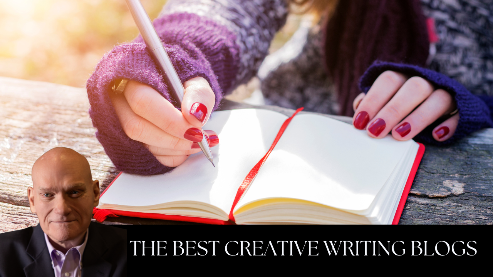

Regardless how many books I’ve written or sold, if I’m not still educating myself about writing, I’m stagnating.
My late mother taught me the value of life-long learning. Not only was she a piano teacher into her eighties, but she was also a piano student.
One of the most powerful learning tools today is the internet. But you could surf through endless writing blogs before finally finding which are the best for you and worthy of your time.
So I asked my team to research what’s out there, and we’ve compiled a short list to get you started. But you also know how to search by specifying genres and areas of interest, so don’t stop here. Our list is by no means exhaustive, and I haven’t even included all the ones I enjoy.
Here, then, are just suggestions of a few blogs you might want to check out to start your own list of writing resources—and we list them in alphabetical order:
Through his blog Become a Writer Today, Bryan Collins focuses on the needs of new writers.
A non-fiction writer, blogger, and podcaster, Bryan writes on those genres, as well as on self-publishing. He’s written two 3-book series, “Become a Better Writer Today” and “The Power of Creativity.”
A team of writers cover the business side of writing and such topics as writer’s block, formatting, and best practices.
A New York Times and USA Today bestselling thriller author, Joanna Penn is behind The Creative Penn.
She also writes books for writers—her 21 titles have sold more than a half million copies. She’s a speaker, an entrepreneur, runs Curl Up Press, and has been named one of the top 100 Creative Professionals in the UK.
Joanna’s blog focuses on self-publishing, marketing, and writing. The Creative Penn podcast offers more than 350 episodes on writing.
Founded by writing teacher Nancy Strauss, Creative Writing Now offers courses, tips, prompts, and information on writing contests. Writing teachers will find lesson plans as well.
DIY MFA serves as a do-it-yourself manual for the equivalent of a Master of Fine Arts in writing
without the expense. It centers on writing with focus, reading with purpose, building your
writing
community, and how to discover the writing tools available online and off.
Founded by author and podcaster Gabriela Pereira, the site posts on everything from
playwriting to surviving
rejection, travel writing, and many other writing topics. She offers a “writer igniter” that
generates writing prompts.
A must read for writers and publishers, blogger Jane Friedman is one of the leading voices in the digital age of publishing.
She has more than 20 years’ experience in the industry, publishes The Hot Sheet (a newsletter for authors), is a columnist for Publishers Weekly, a professor with The Great Courses (How to Publish Your Book), and wrote The Business of Being a Writer.
Jane’s blog offers how-to’s on publishing, writing a book proposal, finding a literary agent, and many other such topics.
Through her website Helping Writers Become Authors, K.M. Weiland has published more than 1,200 blog posts educating writers on the ins and outs and dos and don’ts of writing and publishing.
She offers a bi-monthly e-letter, a podcast, and a vlog. She writes historical and speculative fiction, as well as how-to books, including Outlining Your Novel and Structuring Your Novel.
Novelist, copyeditor, and writing coach C.S. Lakin created Live Write Thrive to help write your novel with posts like “The Challenges of Believability in Writing Science Fiction” and “The 3 Ways to Show Emotion in Your Characters.”
Bridget and Brendan McNulty and Dagmar Timler co-founded Now Novel, a platform designed to help you craft your story.
The blog offers information for writers at every stage, a character writing hub, productivity tips, and help creating fantasy worlds.
Pro Writing Aid is a desktop app you can use with programs like Scrivener, Word, and Google Docs. It catches grammar errors, suggests style changes, and even checks your work for plagiarism.
Their blog covers which writing apps are best, the writing process, blogging and content writing, grammar rules, and business writing.
Founded by Suzannah Windsor, Write It Sideways is for aspiring and emerging writers.
A team of writers answers questions budding writers ask, and blogs on things like writer’s intuition,“Confessions of a Writing Group Virgin,” and “Here’s the Type of Hate Mail Bloggers Get.”
Authors Angela Ackerman and Becca Puglisi created Writers Helping Writers for new writers, seasoned writers, editors, and writing teachers. The blog offers advice on technique and strategy, as well as “Navigating the Changing Face of Book Promotion with Smart, Effective Strategies” and “How To Stop Self-Doubt From Holding You Back From Writing.”
Joe Bunting started The Write Practice to help writers become better through practice.
He offers writing prompts and provides a platform for fellow writers to offer feedback on what you’ve written.
And of course you’re always welcome to visit me at JerryJenkins.com.
Over the last half century I’ve been an editor, a publisher, a nonfiction author, and a novelist—yet I’m still learning and growing like you. I offer a 20-Step Guide on How to Write a Book, How to Develop a Great Story Idea, Find the Right Writers Group and How to Write Dialogue.
The best mentoring comes from seasoned writers proven in their fields. So dive into these blog sites and commit to life-long learning.
.png)